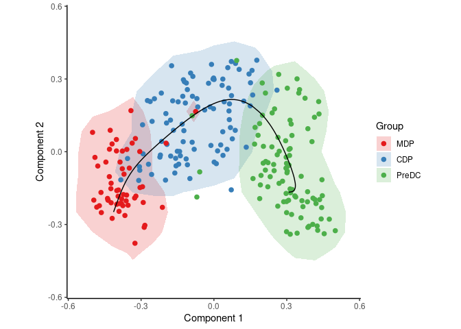
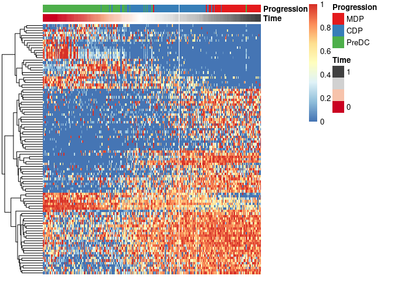
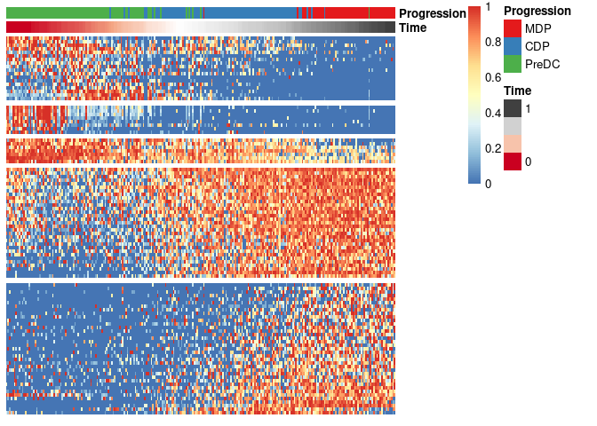

SCORPIUS an unsupervised approach for inferring linear developmental chronologies from single-cell RNA sequencing data. In comparison to similar approaches, it has three main advantages:
It accurately reconstructs linear dynamic processes. The performance was evaluated using a quantitative evaluation pipeline and ten single-cell RNA sequencing datasets.
It automatically identifies marker genes, speeding up knowledge discovery.
It is fully unsupervised. Prior knowledge of the relevant marker genes or cellular states of individual cells is not required.
News:
See
news(package = "SCORPIUS")for a full list of changes to the package.Our preprint is on bioRxiv (Cannoodt et al. 2016).
Check out our review on Trajectory Inference methods (Saelens et al. 2019).
Installing SCORPIUS
You can install:
-
the latest released version from CRAN with
install.packages("SCORPIUS") -
the latest development version from GitHub with
devtools::install_github("rcannood/SCORPIUS", build_vignettes = TRUE)
If you encounter a bug, please file a minimal reproducible example on the issues page.
Learning SCORPIUS
To get started, read the introductory example below, or read one of the vignettes containing more elaborate examples:
- Running SCOPIUS on an AnnData object:
vignette("anndata", package="SCORPIUS") - Investigating dendritic cell maturation in dendritic cell progenitors:
vignette("ginhoux", package="SCORPIUS") - Running SCOPIUS on a Seurat object:
vignette("seurat", package="SCORPIUS") - Trajectory inference from simulated data:
vignette("simulated-data", package="SCORPIUS")
Introductory example
This section describes the main workflow of SCORPIUS without going in depth in the R code. For a more detailed explanation, see the vignettes listed below.
To start using SCORPIUS, simply write:
The ginhoux dataset (Schlitzer et al. 2015) contains 248 dendritic cell progenitors in one of three cellular cellular states: MDP, CDP or PreDC. Note that this is a reduced version of the dataset, for packaging reasons. See ?ginhoux for more info.
data(ginhoux)
expression <- ginhoux$expression
group_name <- ginhoux$sample_info$group_nameWith the following code, SCORPIUS reduces the dimensionality of the dataset and provides a visual overview of the dataset. In this plot, cells that are similar in terms of expression values will be placed closer together than cells with dissimilar expression values.
space <- reduce_dimensionality(expression, "spearman")
draw_trajectory_plot(space, group_name, contour = TRUE)To infer and visualise a trajectory through these cells, run:
traj <- infer_trajectory(space)
draw_trajectory_plot(space, group_name, traj$path, contour = TRUE)
To identify candidate marker genes, run:
# warning: setting num_permutations to 10 requires a long time (~30min) to run!
# set it to 0 and define a manual cutoff for the genes (e.g. top 200) for a much shorter execution time.
gimp <- gene_importances(
expression,
traj$time,
num_permutations = 10,
num_threads = 8,
ntree = 10000,
ntree_perm = 1000
) To select the most important genes and scale its expression, run:
gimp$qvalue <- p.adjust(gimp$pvalue, "BH", length(gimp$pvalue))
gene_sel <- gimp$gene[gimp$qvalue < .05]
expr_sel <- scale_quantile(expression[,gene_sel])To visualise the expression of the selected genes, use the draw_trajectory_heatmap function.
draw_trajectory_heatmap(expr_sel, traj$time, group_name)
Finally, these genes can also be grouped into modules as follows:
modules <- extract_modules(scale_quantile(expr_sel), traj$time, verbose = F)
draw_trajectory_heatmap(expr_sel, traj$time, group_name, modules)